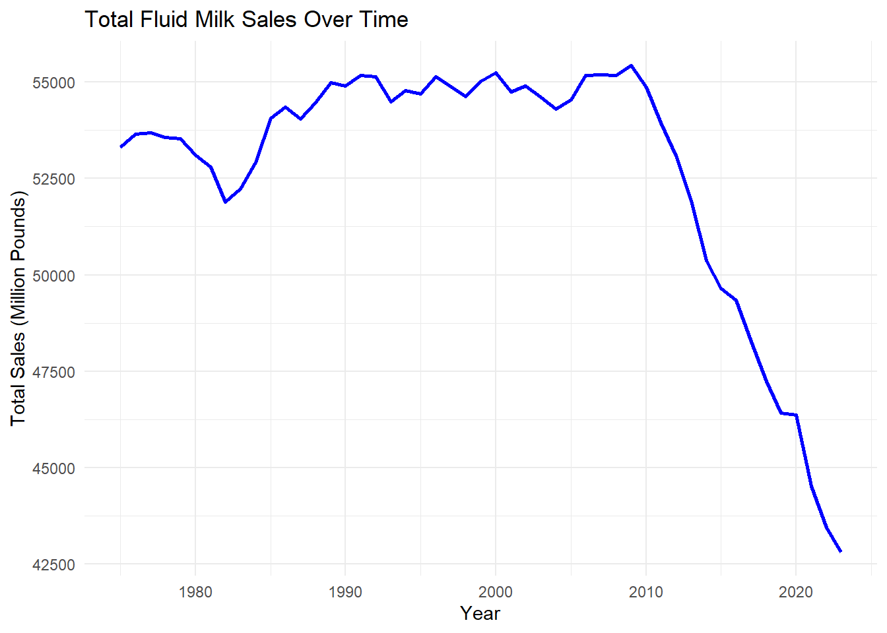
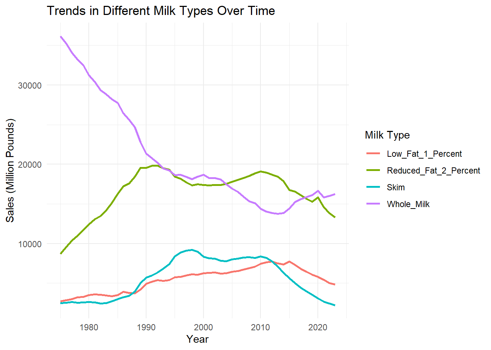
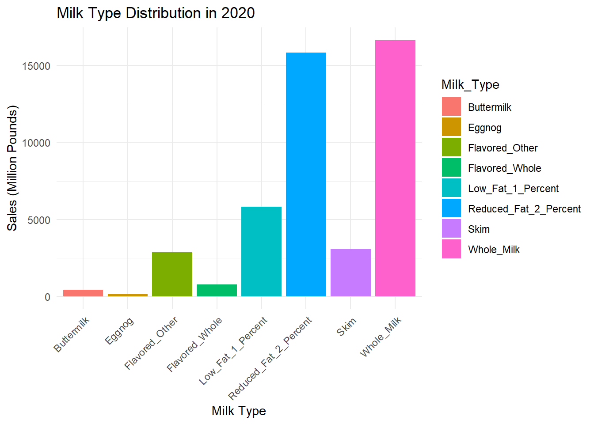
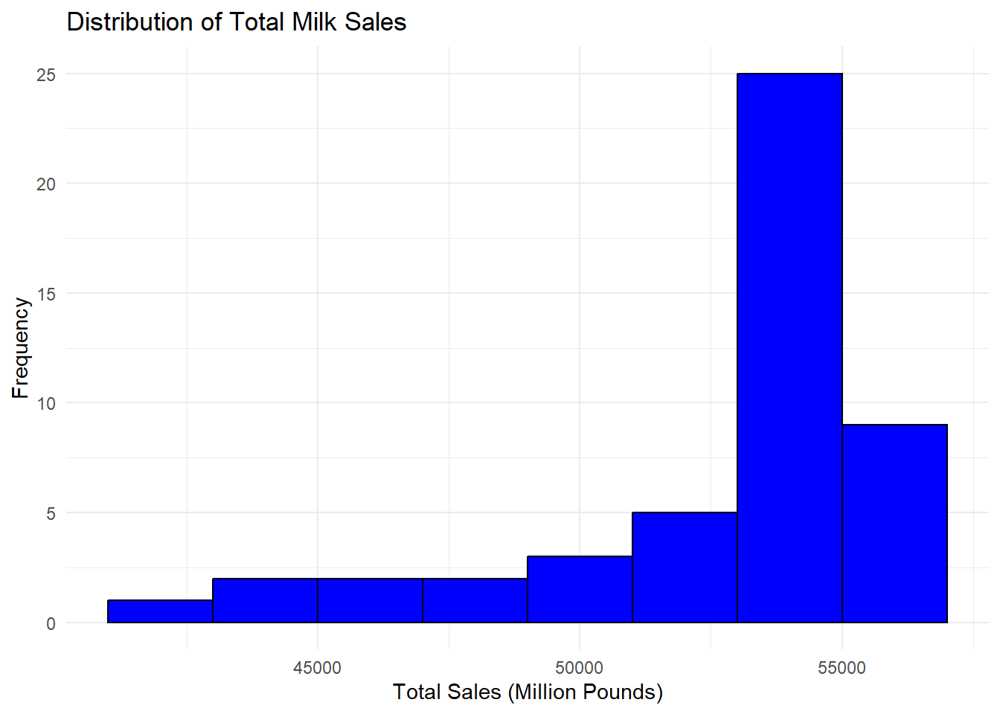
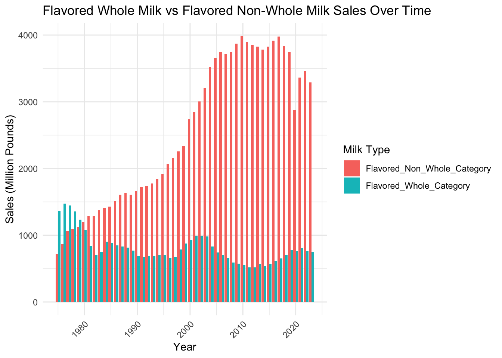
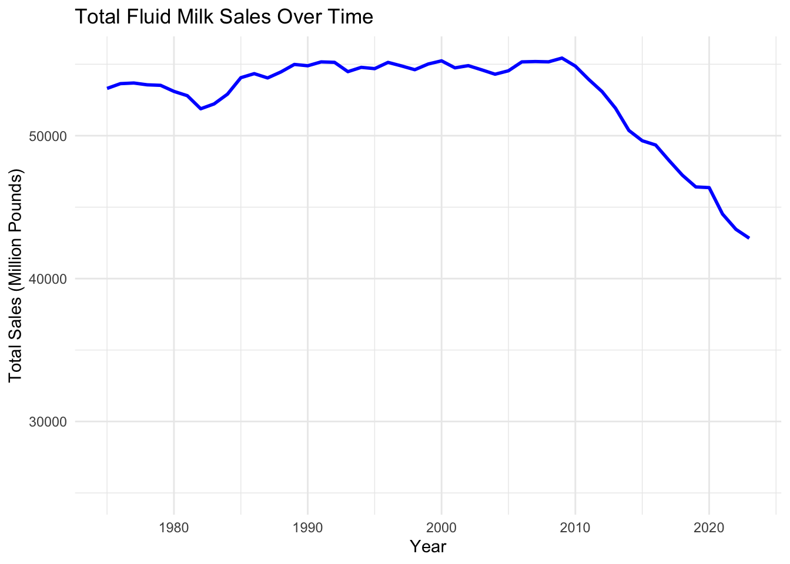

library(readxl)
library(dplyr)##
## Attaching package: 'dplyr'## The following objects are masked from 'package:stats':
##
## filter, lag## The following objects are masked from 'package:base':
##
## intersect, setdiff, setequal, unionfile_path <- "fluidmilk.xlsx"
fluidmilk_data <- read_excel(file_path, sheet = "fluidmilk")## New names:
## • `` -> `...2`
## • `` -> `...3`
## • `` -> `...4`
## • `` -> `...5`
## • `` -> `...6`
## • `` -> `...7`
## • `` -> `...8`
## • `` -> `...9`
## • `` -> `...10`colnames(fluidmilk_data) <- c("Year", "Whole_Milk", "Reduced_Fat_2_%",
"Low_Fat_1_%", "Skim", "Flavored_Whole",
"Flavored_Other", "Buttermilk", "Eggnog", "Total_Sales")
fluidmilk_data <- fluidmilk_data %>%
mutate(Year = as.numeric(Year)) %>%
filter(!is.na(Year))## Warning: There was 1 warning in `mutate()`.
## ℹ In argument: `Year = as.numeric(Year)`.
## Caused by warning:
## ! NAs introduced by coercionfluidmilk_data <- fluidmilk_data %>%
mutate(across(Whole_Milk:Total_Sales, as.numeric))
print(fluidmilk_data)## # A tibble: 49 × 10
## Year Whole_Milk `Reduced_Fat_2_%` `Low_Fat_1_%` Skim Flavored_Whole
## <dbl> <dbl> <dbl> <dbl> <dbl> <dbl>
## 1 1975 36188 8726 2742 2480 1366
## 2 1976 35241 9556 2875 2524 1475
## 3 1977 34036 10423 3003 2617 1446
## 4 1978 33235 11017 3233 2543 1359
## 5 1979 32480 11762 3281 2604 1236
## 6 1980 31253 12435 3483 2636 1075
## 7 1981 30397 13088 3574 2583 843
## 8 1982 29350 13501 3537 2449 710
## 9 1983 28871 14183 3455 2474 749
## 10 1984 28204 15143 3382 2726 907
## # ℹ 39 more rows
## # ℹ 4 more variables: Flavored_Other <dbl>, Buttermilk <dbl>, Eggnog <dbl>,
## # Total_Sales <dbl>key_stats <- fluidmilk_data %>%
summarise(
across(everything(), list(mean = mean, sd = sd, min = min, max = max), na.rm = TRUE)
)## Warning: There was 1 warning in `summarise()`.
## ℹ In argument: `across(...)`.
## Caused by warning:
## ! The `...` argument of `across()` is deprecated as of dplyr 1.1.0.
## Supply arguments directly to `.fns` through an anonymous function instead.
##
## # Previously
## across(a:b, mean, na.rm = TRUE)
##
## # Now
## across(a:b, \(x) mean(x, na.rm = TRUE))print(key_stats)## # A tibble: 1 × 40
## Year_mean Year_sd Year_min Year_max Whole_Milk_mean Whole_Milk_sd
## <dbl> <dbl> <dbl> <dbl> <dbl> <dbl>
## 1 1999 14.3 1975 2023 20872. 6578.
## # ℹ 34 more variables: Whole_Milk_min <dbl>, Whole_Milk_max <dbl>,
## # `Reduced_Fat_2_%_mean` <dbl>, `Reduced_Fat_2_%_sd` <dbl>,
## # `Reduced_Fat_2_%_min` <dbl>, `Reduced_Fat_2_%_max` <dbl>,
## # `Low_Fat_1_%_mean` <dbl>, `Low_Fat_1_%_sd` <dbl>, `Low_Fat_1_%_min` <dbl>,
## # `Low_Fat_1_%_max` <dbl>, Skim_mean <dbl>, Skim_sd <dbl>, Skim_min <dbl>,
## # Skim_max <dbl>, Flavored_Whole_mean <dbl>, Flavored_Whole_sd <dbl>,
## # Flavored_Whole_min <dbl>, Flavored_Whole_max <dbl>, …The dataset covers years from 1975 to 2023, with a mean year of around 1999. This indicates the dataset spans a considerable period, allowing for a long-term trend analysis.The mean value for “Whole Milk” sales is approximately 20,871.73 units. Based on the table, it appears that whole milk sales have generally decreased over time, as the earlier years show higher values than might be expected based on recent years. This might suggest a trend away from whole milk consumption over time.Similar trends might be visible in the data for “Reduced Fat 2%”, “Low Fat 1%”, and “Skim” milk types, which would be useful to confirm with visualizations.
library(ggplot2)
library(tidyr)
file_path <- "fluidmilk.xlsx"
fluidmilk_data <- read_excel(file_path, sheet = "fluidmilk")## New names:
## • `` -> `...2`
## • `` -> `...3`
## • `` -> `...4`
## • `` -> `...5`
## • `` -> `...6`
## • `` -> `...7`
## • `` -> `...8`
## • `` -> `...9`
## • `` -> `...10`colnames(fluidmilk_data) <- c("Year", "Whole_Milk", "Reduced_Fat_2_Percent",
"Low_Fat_1_Percent", "Skim", "Flavored_Whole",
"Flavored_Other", "Buttermilk", "Eggnog", "Total_Sales")
fluidmilk_data <- fluidmilk_data %>%
mutate(Year = as.numeric(Year)) %>%
filter(!is.na(Year)) %>%
mutate(across(Whole_Milk:Total_Sales, as.numeric))## Warning: There was 1 warning in `mutate()`.
## ℹ In argument: `Year = as.numeric(Year)`.
## Caused by warning:
## ! NAs introduced by coercion# 1. Line Plot: Trends in Total Milk Sales Over Time
ggplot(fluidmilk_data, aes(x = Year, y = Total_Sales)) +
geom_line(color = "blue", size = 1) +
labs(title = "Total Fluid Milk Sales Over Time", x = "Year", y = "Total Sales (Million Pounds)") +
theme_minimal()## Warning: Using `size` aesthetic for lines was deprecated in ggplot2 3.4.0.
## ℹ Please use `linewidth` instead.
## This warning is displayed once every 8 hours.
## Call `lifecycle::last_lifecycle_warnings()` to see where this warning was
## generated.
# 2. Line Plot: Trends in Different Milk Types Over Time
fluidmilk_long <- fluidmilk_data %>%
select(Year, Whole_Milk, Reduced_Fat_2_Percent, Low_Fat_1_Percent, Skim) %>%
pivot_longer(cols = -Year, names_to = "Milk_Type", values_to = "Sales")
ggplot(fluidmilk_long, aes(x = Year, y = Sales, color = Milk_Type)) +
geom_line(size = 1) +
labs(title = "Trends in Different Milk Types Over Time", x = "Year", y = "Sales (Million Pounds)", color = "Milk Type") +
theme_minimal()
# 3. Bar Plot: Distribution of Milk Types in a Specific Year
milk_2020 <- fluidmilk_data %>%
filter(Year == 2020) %>%
select(Whole_Milk, Reduced_Fat_2_Percent, Low_Fat_1_Percent, Skim, Flavored_Whole, Flavored_Other, Buttermilk, Eggnog) %>%
pivot_longer(cols = everything(), names_to = "Milk_Type", values_to = "Sales")
ggplot(milk_2020, aes(x = Milk_Type, y = Sales, fill = Milk_Type)) +
geom_bar(stat = "identity") +
labs(title = "Milk Type Distribution in 2020", x = "Milk Type", y = "Sales (Million Pounds)") +
theme_minimal() +
theme(axis.text.x = element_text(angle = 45, hjust = 1))
# 4. Histogram: Distribution of Total Milk Sales
ggplot(fluidmilk_data, aes(x = Total_Sales)) +
geom_histogram(binwidth = 2000, fill = "blue", color = "black") +
labs(title = "Distribution of Total Milk Sales", x = "Total Sales (Million Pounds)", y = "Frequency") +
theme_minimal()
a.Growth Period (1975 to mid-1980s): During this period, total fluid milk sales experienced steady growth, likely driven by population growth and increased demand for dairy products.
b.Plateau Phase (mid-1980s to around 2010): Sales remained relatively stable, indicating a period of sus- tained consumption where demand neither increased nor decreased significantly.
c.Decline Period (2010 to 2023): After 2010, a sharp and continuous decline in fluid milk sales is observed, reflecting a significant shift in consumer preferences and market trends.
the data suggests a major transformation in the dairy industry, particularly in the last decade, as consumer behaviors evolve. Understanding the underlying factors driving these trends would be key for stakeholders in the dairy market to adapt to these changes.
a.The sales of whole milk have experienced a dramatic decline since 1975. Initially the dominant milk type, it steadily decreased as consumers shifted toward lower-fat alternatives, reflecting changing dietary preferences and health trends.
Reduced-Fat (2%) Milk: gained popularity starting in the late 1970s and peaked around the 1990s. However, its sales began to decline after 2010, mirroring the overall decline in fluid milk consumption.
Skim milk experienced gradual growth from the 1980s to the early 2000s, reflecting increasing health- consciousness. However, its sales have significantly declined since the mid-2000s, suggesting a loss of favor among consumers, possibly due to taste or the rise of alternatives.
d.Sales of 1% milk have remained relatively stable over the years, though they have seen a slight decline post-2010.
While there was a clear shift from whole milk to reduced-fat and skim milk during the late 20th century, all categories have experienced declining sales since 2010. This underscores a broader trend of declining fluid milk consumption, possibly driven by the rise of plant-based alternatives, changing dietary habits, and demographic shifts.
a.Whole Milk and Reduced-Fat 2% Milk are the most consumed milk types in 2020, showing they remain staples in consumer preferences despite the overall decline in milk consumption.
b.Skim Milk and Low-Fat 1% Milk have significantly lower sales compared to the top two categories. This suggests a decline in the popularity of these lighter milk options, possibly due to changing health trends or consumer taste preferences.
The majority of years have total milk sales concentrated in the range of approximately 52,000 to 55,000 million pounds. This suggests that for a significant part of the observed period, milk sales were relatively stable and high.
There are fewer years with total milk sales below 50,000 million pounds. These years likely correspond to the more recent period (post-2010), where milk consumption began to decline sharply.
c.The distribution is right-skewed, indicating that while most years experienced high sales volumes, there is a noticeable tail on the left side reflecting the gradual decline in milk consumption in more recent years. This plot highlights the decline in milk consumption as an emerging trend rather than the historical norm. It suggests that milk sales were robust for a majority of the observed period, with the decline being a more recent phenomenon.
Future project ideas:
Provide a comprehensive analysis of how milk sales have evolved over time and what factors may have driven these changes.
Examine how consumer preferences have shifted between milk types over the decades.
3.Investigate the factors contributing to the sharp decline in fluid milk sales post-2010.
library(plotly)##
## Attaching package: 'plotly'## The following object is masked from 'package:ggplot2':
##
## last_plot## The following object is masked from 'package:stats':
##
## filter## The following object is masked from 'package:graphics':
##
## layoutcolnames(fluidmilk_data) <- c("Year", "Whole_Milk", "Reduced_Fat_2_Percent",
"Low_Fat_1_Percent", "Skim", "Flavored_Whole",
"Flavored_Other", "Buttermilk", "Eggnog", "Total_Sales")
fluidmilk_data <- fluidmilk_data %>%
mutate(Year = as.numeric(Year)) %>%
filter(!is.na(Year)) %>%
mutate(across(Whole_Milk:Total_Sales, as.numeric))
fluidmilk_long <- fluidmilk_data %>%
select(Year, Whole_Milk, Reduced_Fat_2_Percent, Low_Fat_1_Percent, Skim) %>%
pivot_longer(cols = -Year, names_to = "Milk_Type", values_to = "Sales")
print(head(fluidmilk_long))## # A tibble: 6 × 3
## Year Milk_Type Sales
## <dbl> <chr> <dbl>
## 1 1975 Whole_Milk 36188
## 2 1975 Reduced_Fat_2_Percent 8726
## 3 1975 Low_Fat_1_Percent 2742
## 4 1975 Skim 2480
## 5 1976 Whole_Milk 35241
## 6 1976 Reduced_Fat_2_Percent 9556summary(fluidmilk_long)## Year Milk_Type Sales
## Min. :1975 Length:196 Min. : 2238
## 1st Qu.:1987 Class :character 1st Qu.: 5797
## Median :1999 Mode :character Median : 9171
## Mean :1999 Mean :12081
## 3rd Qu.:2011 3rd Qu.:17633
## Max. :2023 Max. :36188if (any(is.na(fluidmilk_long$Sales))) {
print("Warning: There are missing values in the Sales column.")
}
ggplot_basic <- ggplot(fluidmilk_long, aes(x = Year, y = Sales, color = Milk_Type)) +
geom_line(size = 1) +
labs(title = "Trends in Different Milk Types Over Time",
x = "Year",
y = "Sales (Million Pounds)",
color = "Milk Type") +
theme_minimal()
print(ggplot_basic)ggplot_interactive <- ggplot(fluidmilk_long, aes(
x = Year,
y = Sales,
color = Milk_Type,
text = paste0("Year: ", Year,
"<br>Milk Type: ", Milk_Type,
"<br>Sales: ", round(Sales, 2))
)) +
geom_line(size = 1) +
labs(title = "Trends in Different Milk Types Over Time",
x = "Year",
y = "Sales (Million Pounds)",
color = "Milk Type") +
theme_minimal()
interactive_plot <- ggplotly(ggplot_interactive, tooltip = "text")
interactive_plotlibrary(ggplot2)
library(dplyr)
library(tidyr)
fluidmilk_data_comparison <- fluidmilk_data %>%
mutate(
Flavored_Whole_Category = Flavored_Whole,
Flavored_Non_Whole_Category = Flavored_Other
) %>%
select(Year, Flavored_Whole_Category, Flavored_Non_Whole_Category) %>%
pivot_longer(cols = c(Flavored_Whole_Category, Flavored_Non_Whole_Category),
names_to = "Milk_Type", values_to = "Sales")
ggplot(fluidmilk_data_comparison, aes(x = Year, y = Sales, fill = Milk_Type)) +
geom_bar(stat = "identity", position = "dodge") +
labs(
title = "Flavored Whole Milk vs Flavored Non-Whole Milk Sales Over Time",
x = "Year",
y = "Sales (Million Pounds)",
fill = "Milk Type"
) +
theme_minimal() +
theme(axis.text.x = element_text(angle = 45, hjust = 1)) ## revised plot 1
library(ggplot2)
ggplot(fluidmilk_data, aes(x = Year, y = Total_Sales)) +
geom_line(color = "blue", size = 1) +
scale_y_continuous(limits = c(25000, NA)) + # Start y-axis at 25,000
labs(
title = "Total Fluid Milk Sales Over Time",
x = "Year",
y = "Total Sales (Million Pounds)"
) +
theme_minimal()